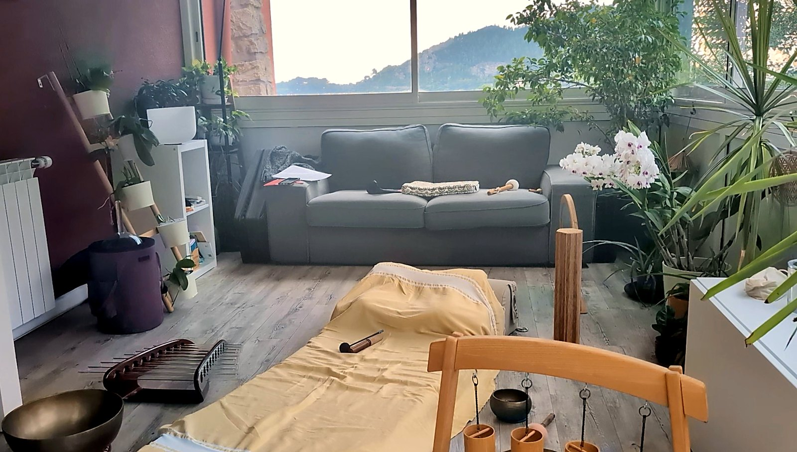

La sonothérapie
Un soin sur mesure, par le son.
Allongé, habillé, confortablement installé, vous laissez les sons et les vibrations vous envelopper. Le corps se relâche, l'esprit s'apaise : un temps rien que pour vous, pour vous poser, vous détendre et vous recentrer.

Soin d'harmonisation sonore, adapté à vos besoins du moment
Un soin à votre écoute
Tout commence par un temps d'échange, pour parler de vos besoins du moment. Vous vous allongez ensuite, confortablement installé, et pendant que vous vous détendez, je repère les zones et les chakras qui ont besoin d'être harmonisés. Chacun reçoit les sons et les fréquences qui lui correspondent, avant un retour tout en douceur pour partager vos ressentis.
Des sons aigus aux sons graves
Sons cristallins et aigus
- La harpe de cristal : des tubes de plusieurs tailles, aux notes claires et lumineuses
- Le bol thérapeutique en cristal : un son pur, qui se prolonge longuement
- Les carillons Koshi : quatre accords délicats, inspirés des quatre éléments
Sons graves et profonds
- Le gong : des vibrations enveloppantes, ressenties dans tout le corps
- Les bols tibétains : posés près du corps, ils diffusent des sons riches et chauds
- Le tambour océan : le bruit des vagues qui vont et viennent
- Le tambour chamanique : un battement régulier, comme un cœur qui s'apaise

Un lieu lumineux, ouvert sur le jardin
La séance se déroule dans une véranda baignée de lumière, entourée de plantes, face au jardin.
Écoutez le tambour océan
Un son doux et enveloppant, comme une marée qui va et vient. Appuyez sur lecture, avec le son.
Pour toutes celles et ceux qui ont besoin d'une pause
Pour se détendre, mieux vivre le stress du quotidien, retrouver un sommeil plus apaisé ou simplement s'offrir un moment de calme.
Envie d'aller plus loin ? Prolongez la séance dans le jacuzzi ou le hammam avec les formules combinées.
Une très belle découverte
★★★★★« Nous avons découvert Villa 144 et avons commencé par profiter du spa nocturne. Le cadre est magnifique, avec une vue superbe. […] J'ai ensuite participé à une séance de sonothérapie et ce fut une très belle découverte. Les sons et les vibrations procurent une profonde relaxation et permettent de relâcher les tensions accumulées. On ressort apaisé, détendu et véritablement ressourcé. »— Céline C., avis Google
★★★★★« Le cadre est tout simplement exceptionnel, avec une vue merveilleuse qui invite à la détente. […] J’ai pu profiter du jacuzzi, du hammam et surtout d’un incroyable soin de sonothérapie, une expérience profondément relaxante qui invite à se reconnecter à soi-même, à apaiser son esprit et à oublier le stress du quotidien. Les vibrations sonores procurent une sensation de lâcher-prise absolument unique. […] Un immense merci Aline pour cette belle journée, qui fait du bien au corps comme à l’esprit. »— Ljubica O., avis Google
Questions fréquentes sur la sonothérapie
Comment se déroule une séance de sonothérapie ?
La séance dure 1 heure et se fait en individuel. Vous restez habillé, confortablement allongé. Aline repère les chakras en déséquilibre, puis les harmonise par le son : des fréquences cristallines et aiguës pour les chakras du haut, des sons graves et profonds pour les chakras du bas. Tarif : 60 €.
Qu'est-ce qu'une harmonisation sonore des chakras ?
C'est un soin énergétique par le son. Les centres énergétiques (chakras) qui semblent en déséquilibre sont repérés, puis rééquilibrés avec les fréquences qui leur correspondent : sons aigus de la harpe de cristal, du bol en cristal et des carillons Koshi pour le haut du corps, sons graves du gong, des tambours et des bols tibétains pour le bas. Une pratique de bien-être, qui ne remplace pas un avis médical.
Quelle différence entre voyage sonore et harmonisation sonore ?
Le voyage sonore (30 minutes, dans la formule combinée d'une heure) est une immersion dans les sons : vous vous allongez et vous vous laissez porter. L'harmonisation sonore (1 heure, en séance seule ou dans la formule combinée de 2 heures) est un soin sur mesure : après un échange, Aline repère les chakras en déséquilibre, puis les rééquilibre avec les fréquences adaptées.
Faut-il avoir de l'expérience pour faire de la sonothérapie ?
Non, aucune expérience n'est nécessaire. Il suffit de vous installer et de vous laisser porter par les sons.
Quels instruments sont utilisés ?
Des bols tibétains, un bol thérapeutique en cristal, une harpe de cristal, un grand gong, un monolini, 4 carillons Koshi, un tambour océan et un tambour chamanique, dont les sons et vibrations accompagnent la détente.
La sonothérapie remplace-t-elle un traitement médical ?
Non. La sonothérapie est une pratique de bien-être et de relaxation. Elle ne remplace pas un avis ou un traitement médical.